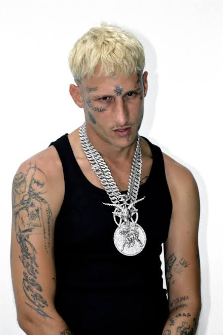

Kefta Boyz

Hacia 2013 apareció el colectivo Kefta Boyz, con Yung Beef, Khaled y El Mini, que vivían en ciudades distintas de Europa y subieron su primera mixtape, A.D.R.O.M.I.C.F.M.S., a Mediafire el día de Navidad de 2013.
Underground · 2013 — hoy
Esta web cuenta cómo el trap llegó a España: de las mixtapes subidas a internet por un grupo de amigos a llenar salas y festivales. Aquí encontrarás a los pioneros, los momentos clave y los artistas que hicieron «trap español» un género propio.
Ver las etapasEl trap en España no empezó en las listas de éxitos, sino en internet y entre amigos. Estos son los nombres que lo empezaron todo.

Hacia 2013 apareció el colectivo Kefta Boyz, con Yung Beef, Khaled y El Mini, que vivían en ciudades distintas de Europa y subieron su primera mixtape, A.D.R.O.M.I.C.F.M.S., a Mediafire el día de Navidad de 2013.
En 2014 Yung Beef, Khaled, Kaydy Cain y el productor Steve Lean se instalaron en Barcelona y formaron PXXR GVNG. Su tema Million Euros Leggins les dio a conocer y en 2015 sacaron el disco Los Pobres con Sony Music. Con el tiempo el colectivo pasó a llamarse Los Santos.
Después llegó una segunda generación en Barcelona, con artistas como Pimp Flaco, que empezó con el grafiti y se hizo conocido hacia 2015 junto a su hermano Kinder Malo y el grupo Nigeria Dreams.
Los tres nombres que aparecen en los datos de esta web son:
Base de trap de uso libre. Fuente original: ver en YouTube.
Un género nacido en Atlanta, con bajos muy graves, ritmos lentos y voces con Auto-Tune. En España sus letras pasaron a hablar de los barrios de aquí.
Porque no tenían discográfica: compartir la música como descarga gratuita era la forma más directa de que llegara a la gente.
Con la etiqueta <audio controls> y dentro varias <source> con formatos distintos, por ejemplo MP3 y OGG.